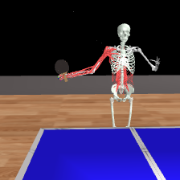
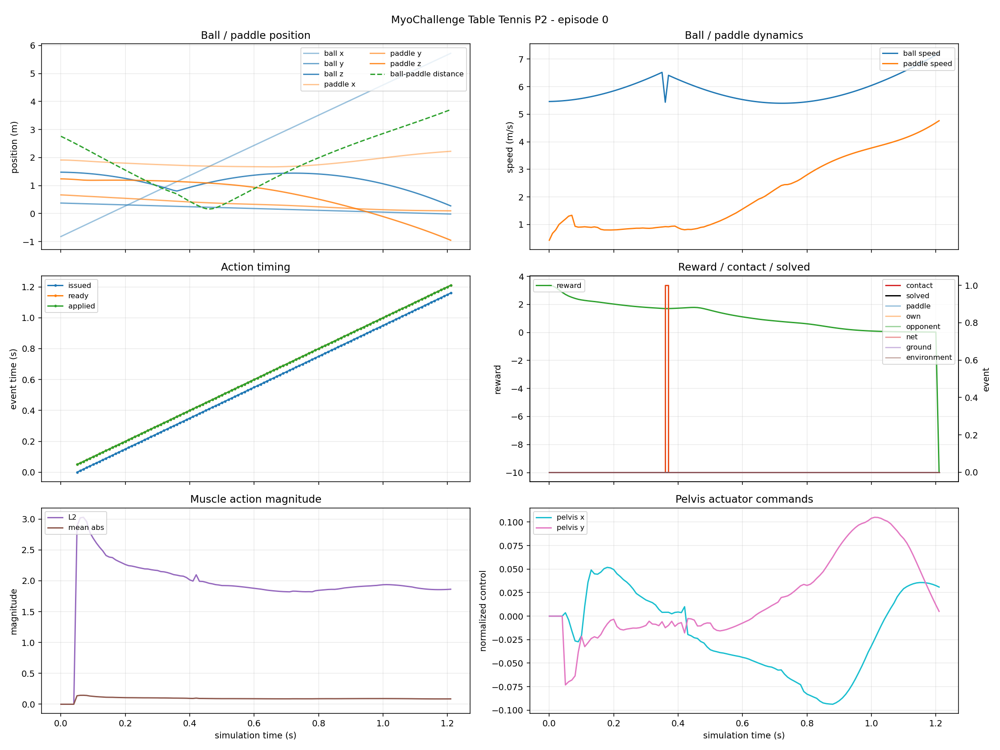

Environment
Seeded reset, native state, native continuous action, reward, score, and headless RGB rendering.
latency-sensitive-bench / integration smoke test
A fast ball-and-paddle task using MyoSuite's native 417-value state and 275 continuous muscle/actuator commands. The same contract now flows through Sample Factory, the latency scheduler, trace replay, teacher export, and LeRobot conversion.
01 · Outcome
Seeded reset, native state, native continuous action, reward, score, and headless RGB rendering.
Zero-latency and fixed-50-ms Sample Factory smoke checkpoints were produced on CPU.
Both policies exported 123-row demonstrations; native LeRobot conversion retained all 275 controls.
No StarVLA, Pi0.5, or other VLA was fine-tuned or rolled out in this integration pass.
02 · Frozen environment contract
myoChallengeTableTennisP2-v0.LatencyBench/MyoChallengeTableTennisP2-v0.Box(-1, 1, (275,), float32).Box(..., (417,), float32).env_fps: 100.0 and obs_fps: 100.0.Runtime API probe · LeRobot summary

03 · Contract propagation
A continuous Gaussian APPO head predicts the native Box(275) action.
Commands are issued at 100 Hz, delayed in raw 10 ms steps, then applied without clipping or remapping.
Canonical rows contain the applied 275-value action and rendered observation.
action_dim=275 and action_carrier=native. No StarVLA robot registration or mixture is emitted in this release.
04 · Trace visualization
The MyoChallenge trace tool replays recorded applied actions from the same seed, verifies reward and done parity, writes a 100 FPS MP4, and plots ball/paddle position and speed, contacts, reward, solve state, muscle magnitude, pelvis commands, and issue/ready/apply times.

05 · Pipeline smoke results
| Training latency | L0 / 0 ms | L1 / 10 ms | L2 / 20 ms | L5 / 50 ms | L10 / 100 ms |
|---|---|---|---|---|---|
| 0 ms | 130.581 | 129.652 | 132.644 | 132.005 | 118.768 |
| 50 ms | 126.676 | 128.295 | 127.841 | 127.318 | 114.596 |
Each cell is one deterministic seed-0 episode after only 4,608 collected training frames. These values verify checkpoint loading and latency application only; they are not a robustness comparison.
One 123-row episode from each checkpoint.
One 123-frame native-275D dataset per checkpoint.
06 · Reproduction
uv pip install -e '.[myochallenge]'
export MUJOCO_GL=egl
python -m training.train \
--config configs/examples/gymnasium/myochallenge_table_tennis_p2/small_model_train.yaml
python -m training.train \
--config configs/examples/gymnasium/myochallenge_table_tennis_p2/small_model_train_fixed_50ms.yamlpython -m latency_bench.run \
--config configs/examples/gymnasium/myochallenge_table_tennis_p2/small_model_eval.yaml
python scripts/debug/visualize_myochallenge_trace.py \
--config configs/examples/gymnasium/myochallenge_table_tennis_p2/small_model_eval.yaml \
--output-dir outputs/examples/gymnasium/myochallenge_table_tennis_p2/zero_eval/eval_latency_5 \
--episode-id 0python scripts/rollout_data/export_sf_teacher_dataset.py \
--checkpoint-root CHECKPOINT_EXPERIMENT_DIR --output-dir RAW_EXPORT \
--max-episodes 1 --max-steps-per-episode 300 --val-fraction 0 \
--num-envs 1 --replay-num-envs 1 --device cpu --deterministic \
--export-image-size 224,224 --context-window 1 --filter-preset none
python scripts/rollout_data/prepare_starvla_lerobot_dataset.py \
RAW_EXPORT LEROBOT_ROOT DATASET_NAME --action-carrier native07 · Limits
See the Gymnasium adaptation index.